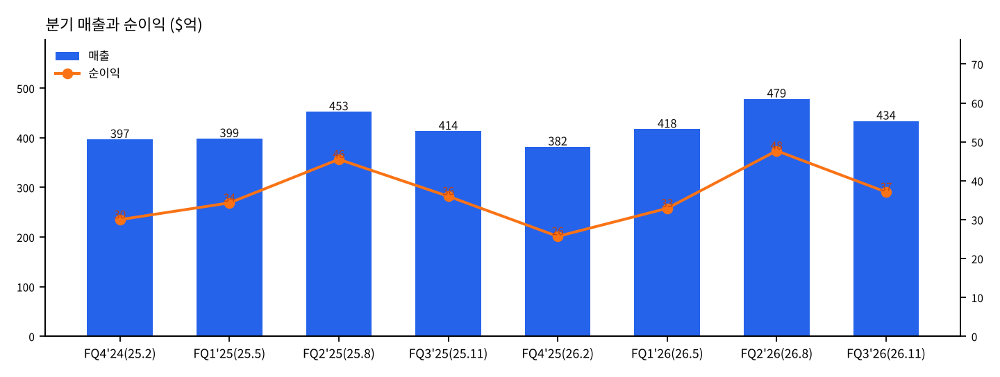
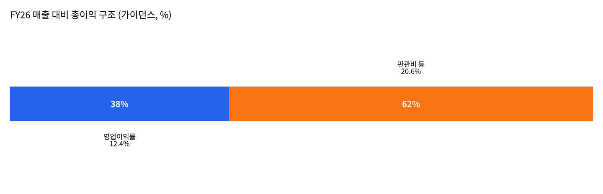
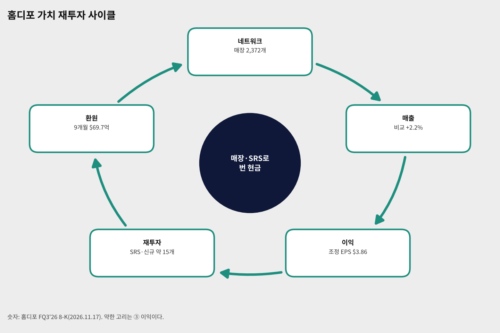

홈디포는 미국·캐나다·멕시코에서 2,372개 매장과 SRS 1,320여 지점을 운영하는 주택 개선 유통 기업이다. 이번 분기 비교매출이 개선됐지만 구매 건수가 줄고 마진이 낮아지고 있다.
| 항목 | 내용 |
|---|---|
| 종목 | Home Depot (HD) · NYSE · 소비재(주택 개선) · 조지아 애틀랜타 |
| 멀티플 | PER·P/S는 08·09 항목 표 참조 |
| 최근 분기(FQ3'26) | 매출 $433.98억, 순이익 $37억, GAAP EPS $3.72 |
| 가이던스(FY26) | 총매출 약 +4.5%, 비교 약 +1.4%, 신규 매장 약 15개, 총이익률 약 33.0% |
| 직원 수 | 약 472,400명(트레이딩뷰) |
| 직책 | 인물 | 역할·특징 |
|---|---|---|
| 회장·CEO | 테드 데커(Ted Decker) | 주택 시장 부진과 소비자 불확실성을 지적해 온 인물 |
| 사장·COO(예정) | 앤마리 캠벨(Ann-Marie Campbell) | 회사 발표에서 직원들에게 감사를 표하며 소개됨 |
| CFO | 리처드 맥페일(Richard McPhail) | 가이던스 설명 담당(확인 필요) |
경영 스타일: '전문가(Pro) 고객과 SRS 결합으로 점유율 확대'. 매장과 SRS(건자재 유통)를 합쳐 전문 건설업자 고객을 확대하고 있다.
매장·온라인·SRS 지점을 연결한 전문가 고객 서비스.
주택 거래가 회복될 때 개선·수리 수요가 늘 것으로 보고 점유율을 넓힌다.
다음 실적발표는 세 가지 질문에 답하는 자리다.
1. 거래 건수가 플러스로 돌아오나?
2. 총이익률 압력이 풀리나?
3. 4Q 비교매출과 SRS 기여는?
한 줄 판정 규칙: 첫 질문(거래 건수)이 개선되고 둘째 질문(마진)이 안정되면 약한 고리(수요·마진)가 풀린다.
일정: FQ4'26 실적 발표는 트레이딩뷰 기준 2027.02.23(확인 필요).
| 분기 | 매출 | 순이익 | EPS | 조정 EPS | 특이 사항 |
|---|---|---|---|---|---|
| FQ4'24(25.2) | $397.0억 | $30.0억 | 3.02 | 3.13 | |
| FQ1'25(25.5) | $398.6억 | $34.3억 | 3.45 | 3.56 | |
| FQ2'25(25.8) | $452.8억 | $45.5억 | 4.58 | 4.68 | |
| FQ3'25(25.11) | $413.5억 | $36.0억 | 3.62 | 3.74 | |
| FQ4'25(26.2) | $382.0억 | $25.7억 | 2.58 | 2.72 | |
| FQ1'26(26.5) | $417.6억 | $32.9억 | 3.30 | 3.43 | |
| FQ2'26(26.8) | $478.6억 | $47.7억 | 4.79 | 4.92 | |
| FQ3'26(26.11) | $434.0억 | $37.1억 | 3.72 | 3.86 | 조정 EPS $3.86(무형자산 상각 제외), 비교매출 +2.2% |
FQ3'26(2026.11.1 종료) 순매출 $433.98억(+4.9%), GAAP EPS $3.72, 조정 EPS $3.86(회사 8-K, 2026.11.17). 매출·순이익·EPS(GAAP 희석)는 트레이딩뷰 스캐너, 조정 EPS는 트레이딩뷰 실적 페이지의 Reported 값이다. 분기 정렬은 오래된 분기→최신이다.

흐름 요약: 최근 분기 매출은 $434.0억로 전년 동기 $413.5억 대비 +5.0%, 순이익은 $37.1억(전년 $36.0억)다. 최근 4분기 GAAP EPS는 $14.39, 조정 EPS는 $14.93다.
| 항목 | 내용 | 값 | 비고 |
|---|---|---|---|
| 총이익률(FY26 가이던스) | 매출 대비 총이익 | 약 33.0% | 가이던스 |
| 영업이익률(FY26 가이던스) | 매출 대비 영업이익 | 약 12.4% | 가이던스 |
| 판관비·기타(내 계산) | 총이익률 − 영업이익률 | 약 20.6% | 내 계산 |

부문별 매출 비중은 이번 조사에서 확인하지 못해 '매출 대비 이익 구조'로 대신했다. 영업이익률 약 12.4%는 총이익률 33.0%에서 판관비 등 20.6%를 뺀 값이다.
홈디포는 '주택 소유자와 전문가에게 주택 개선 제품·서비스를 가장 편리하게 제공하는 것'을 목표로 한다.
| 축 | 내용 |
|---|---|
| 매장 | 2,372개 매장, 신규 약 15개 |
| SRS | 1,320여 지점으로 전문가 고객 확대 |
| 환원 | 9개월 배당 $69.7억 |

| 이동평균 | 값 | 종가 대비 | 위치 |
|---|---|---|---|
| 5일선 | $344.22 | -1.9% | 종가 아래 |
| 20일선 | $338.08 | -0.1% | 종가 아래 |
| 50일선 | $313.73 | +7.6% | 종가 위 |
| 100일선 | $325.67 | +3.7% | 종가 위 |
| 200일선 | $332.14 | +1.7% | 종가 위 |
52주 고가 $397.63(2026-02-12)·저가 $277.15(2026-10-01) 범위에서 종가 $337.64는 50일선, 100일선, 200일선을 웃돌고 5일선, 20일선은 밑돈다.
| 규칙 | 기준 | 현재 값 | 신호 |
|---|---|---|---|
| 장기 추세 필터 | 종가 vs 200일선 | $337.64 > $332.14 | 매수 |
| 중장기 교차 | 50일선 vs 200일선 | $313.73 < $332.14 | 매도 |
| 단기 교차 | 20일선 vs 50일선 | $338.08 > $313.73 | 매수 |
| 돈키언 채널 | 55일 고가 $362.44 / 저가 $277.15 | 중간값 $319.79 위 | 매수 |
| 1개월 모멘텀 | 21거래일 수익률 | +7.1% (기준 $315.11) | 매수 |
| 3개월 모멘텀 | 63거래일 수익률 | +0.9% (기준 $334.49) | 매수 |
| 6개월 모멘텀 | 126거래일 수익률 | +8.7% (기준 $310.58) | 매수 |
| 12개월 모멘텀 | 252거래일 수익률 | -5.7% (기준 $358.03) | 매도 |
| 종합 (8개 평균) | +0.50 | 매수 |
해석: 매수 신호 6개(장기 추세 필터, 단기 교차, 돈키언 채널, 1개월 모멘텀, 3개월 모멘텀, 6개월 모멘텀), 매도 신호 2개(중장기 교차, 12개월 모멘텀). CTA 점수 +0.50(매수). 14일 ATR $10.42 (3.1%), 52주 고가 $397.63 · 저가 $277.15.
| 가격 | 기준 | 무엇이 바뀌나 |
|---|---|---|
| $362.44 | 55일 고가 | 돌파 시 채널 상단 갱신 |
| $358.03 | 12개월 모멘텀 기준가 | 종가가 이 가격 위면 12개월 신호 매수 |
| $334.49 | 3개월 모멘텀 기준가 | 종가가 이 가격 위면 3개월 신호 매수 |
| $332.14 | 200일선 | 종가가 이 선 위/아래인지로 장기 추세 신호가 바뀜 |
| $319.79 | 돈키언 중간값 | 55일 채널 중간값 위/아래로 신호가 바뀜 |
| $315.11 | 1개월 모멘텀 기준가 | 종가가 이 가격 위면 1개월 신호 매수 |
| $310.58 | 6개월 모멘텀 기준가 | 종가가 이 가격 위면 6개월 신호 매수 |
| $277.15 | 55일 저가 | 이탈 시 채널 하단 갱신 |
가격 수준은 신호가 바뀌는 기준선일 뿐 진입·청산 가격 제안이 아니다. 20일/50일 교차는 이동평균 자체가 움직여 단일 가격으로 표시하지 않았다. 일봉·주봉은 종가 기준 직접 계산(고저 데이터 미사용)이다.
| 악재 요인 | 내용 | 강도 |
|---|---|---|
| 거래 건수 감소 | 비교 거래 -0.5% | 중간 |
| 총이익 압력 | 매출원가 +6.0% > 매출 +4.9% | 높음 |
| 주택 시장 | 회사가 주택 부진이 수요를 누른다고 설명해 온 영역 | 중간 |
| 가이던스 하향 | 비교매출 약 +1.4%, EPS 약 +2% | 중간 |
| 티커 | 회사 | PER(TTM) | PEG | P/S | EPS 성장(YoY) |
|---|---|---|---|---|---|
| HD | 홈디포 | 23.5배 | – | 1.97배 | -2% |
| LOW | 로우스 | 18.7배 | – | 1.34배 | -1% |
| TGT | 타깃 | 15.4배 | 0.48 | 0.67배 | +31% |
| WMT | 월마트 | 46.1배 | 11.18 | 1.38배 | +4% |
비교 결론: 홈디포 PER은 로우스보다 높다. TTM GAAP EPS가 -2% 감소해 PEG는 산출 불가다.
홈디포는 영업현금흐름으로 배당(9개월 $69.7억)과 인수를 감당하고 있다.
| 지표 | 값 | 출처 | 해석 |
|---|---|---|---|
| 현금·단기투자 | $20억 | 트레이딩뷰 스캐너(최근 분기) | |
| 총부채 | $620억 | 트레이딩뷰 스캐너(최근 분기) | |
| 순부채(부채−현금) | $600억 | 내 계산 | 현금 대비 부채 부담 |
| 잉여현금흐름(TTM) | $151억 | 트레이딩뷰 스캐너 | |
| TTM 매출 | $1,712억 | 트레이딩뷰 스캐너 |
| 기준 | 매출 | P/S | 비고 |
|---|---|---|---|
| 내 계산(종가 ÷ 최근 4분기 매출 합계) | $1,712.2억 | 1.97배 | 시총은 정렬용 데이터에서만 사용 |
| 동종(트레이딩뷰) | – | LOW 1.34배 · TGT 0.67배 · WMT 1.38배 | 11.19 |
해석: P/S 1.97배는 로우스(1.34배)보다 높다(트레이딩뷰 11.19).
EBITDA는 영업활동의 현금 창출력을 보는 지표이고, PEG는 PER을 EPS 성장률로 나눈 값이다. EBITDA·FCF는 트레이딩뷰 TTM 값이다.
| 지표 | 값 | 산출 |
|---|---|---|
| EBITDA(TTM) | $255억 | 트레이딩뷰 스캐너 |
| EBITDA 마진 | 14.9% | EBITDA ÷ TTM 매출(내 계산) |
| FCF 마진 | 8.8% | FCF ÷ TTM 매출(내 계산) |
| PER(GAAP TTM) | 23.5배 | $337.64 ÷ $14.39 |
| PER(조정 TTM) | 22.6배 | $337.64 ÷ $14.93 |
| 방식 | PER | EPS 성장률 | PEG | 판정 |
|---|---|---|---|---|
| GAAP EPS (TTM $14.39) | 23.5배 | -2% ($14.67 → $14.39) | 산출 불가 | 참고 |
| 조정 EPS (TTM $14.93) | 22.6배 | -1% ($15.11 → $14.93) | 산출 불가 | 참고 |
판정: GAAP EPS 기준 PEG 산출 불가(EPS 성장 -2% 또는 음수) PEG 기준은 1.0 이하 투자 적격, 0.5 이하 적극 매수다. EPS 성장률은 최근 4분기 EPS 합계를 직전 4분기 합계와 비교한 값(내 계산)이고, 일회성 항목이 있으면 조정 EPS 행을 함께 본다.

홈디포의 사이클은 매장·SRS 네트워크 → 매출 → 이익 → 재투자 → 환원이다.
| 고리 | 현재 숫자 | 고리 강도 | 약해지는 신호 |
|---|---|---|---|
| ① 네트워크 | 매장 2,372개, SRS 1,320여 곳 | 강함 | 신규 매장 둔화 |
| ② 매출 | 비교매출 +2.2%, 총매출 +4.9% | 보통 | 거래 건수 -0.5% |
| ③ 이익 | 조정 EPS $3.86(+3.2%) | 보통 | 총이익 압력 |
| ④ 재투자 | 신규 매장 약 15개, SRS 인수 | 진행 중 | 투자 부담 |
| ⑤ 환원 | 9개월 배당 $69.7억 | 강함 | EPS 성장 둔화 |
사이클의 특징: 가장 약한 곳은 ③ 이익이다. 매출원가 증가 속도가 매출보다 빨라 총이익 증가율이 +2.9%에 그쳤다.